Add Recipients for ACH Transfers
Learn how to securely add a new recipient within Online Banking that can be used for ACH Transfers.
1
Click "Business Banking"
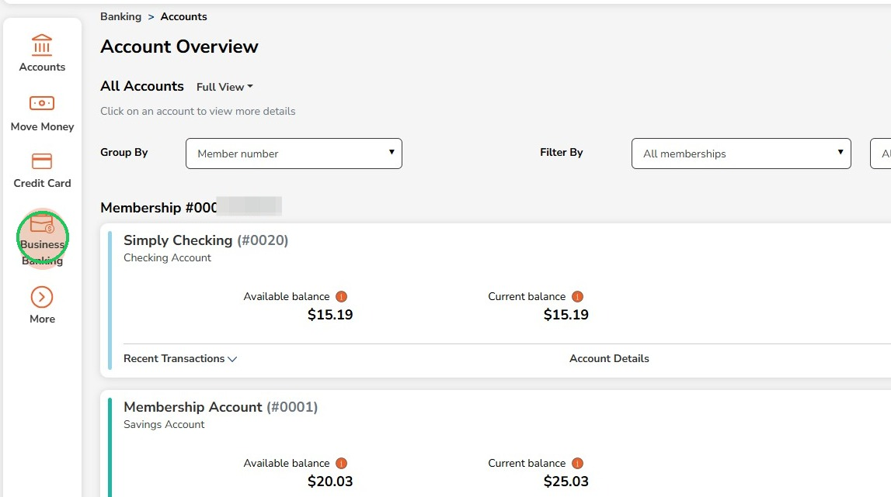
2
Click on "Recipient Management"
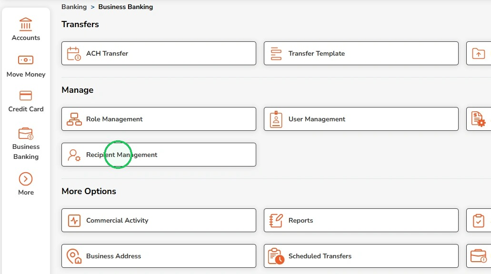
3
Click "Add recipient"
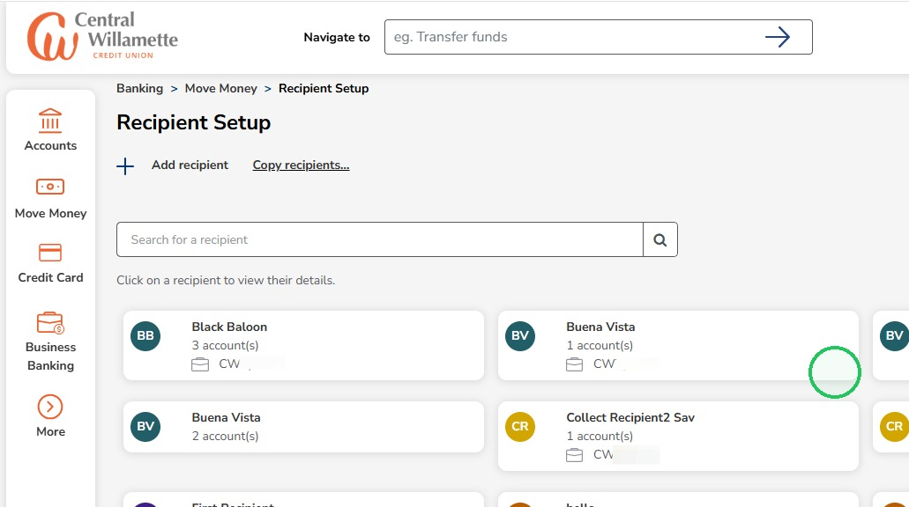
4
Recipients can also be added from the "External Recipient" dropdown on the ACH Transfer page

5
Open the recipient selector to change to the Business account
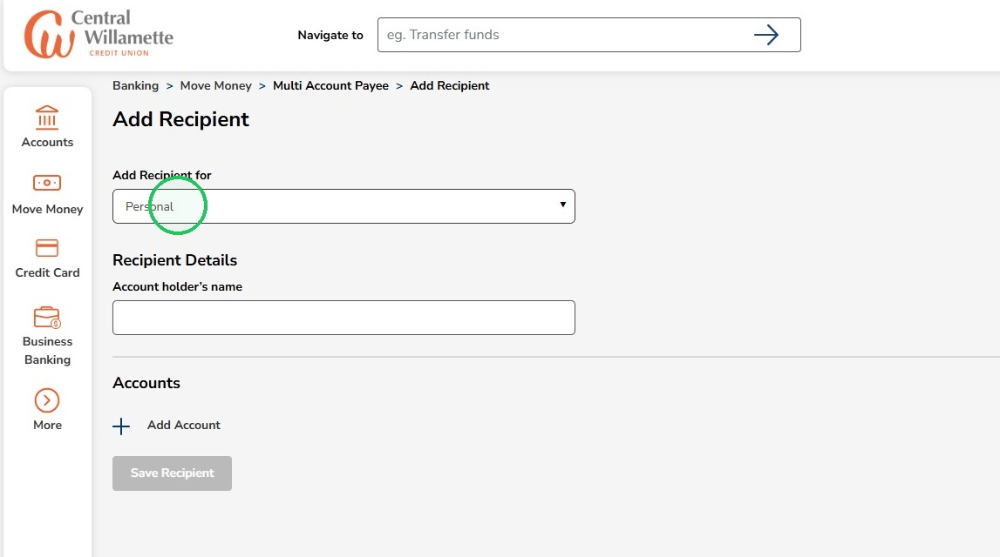
6
Select the Business account the recipient is being added to

7
Enter the recipient name in the Account holder’s name field
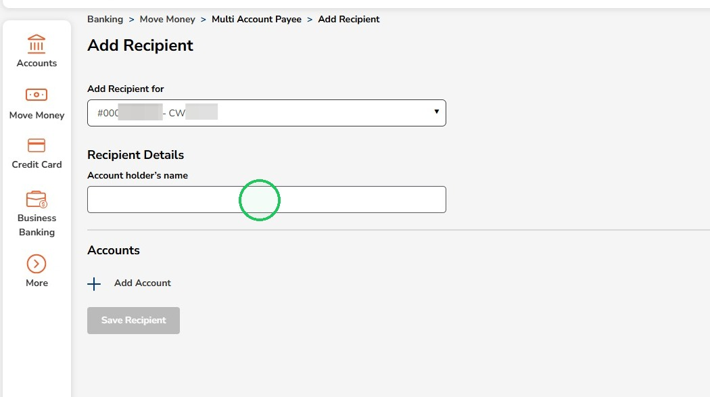
8
Click "Add Account"
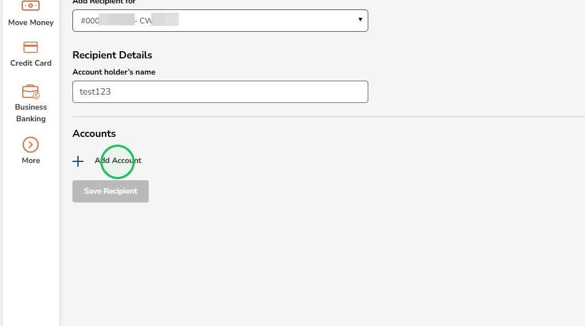
9
Open the Payment Type selector
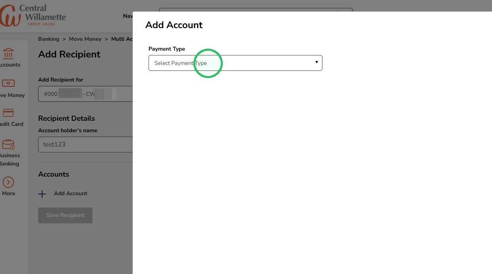
10
Select ACH as the payment type
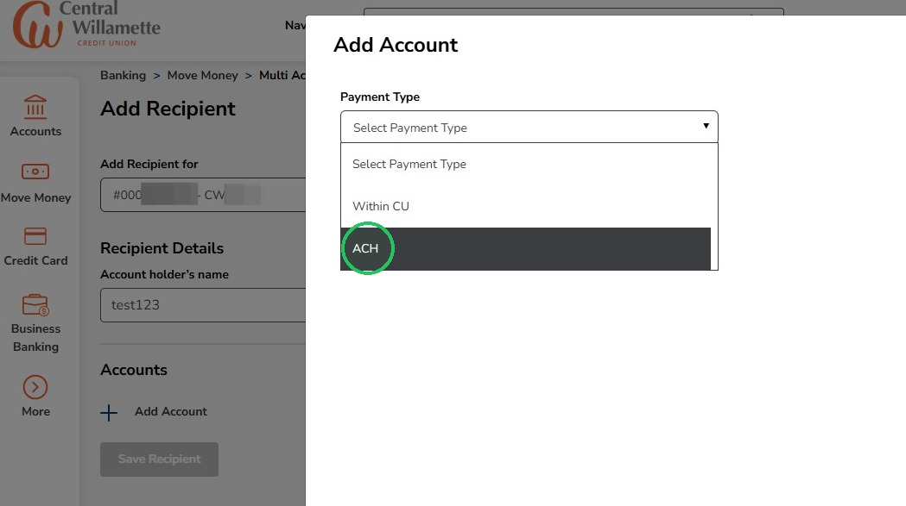
11
Enter the recipient information

12
Clicking here lets you search for the Financial Institution's routing number if you do not know it
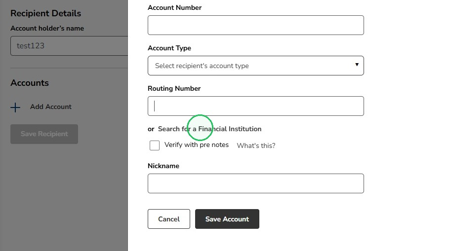
13
Enter the financial institution name
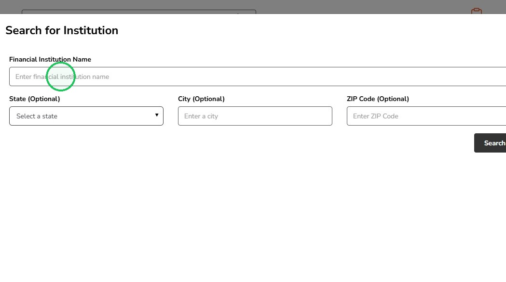
14
Select the financial institution
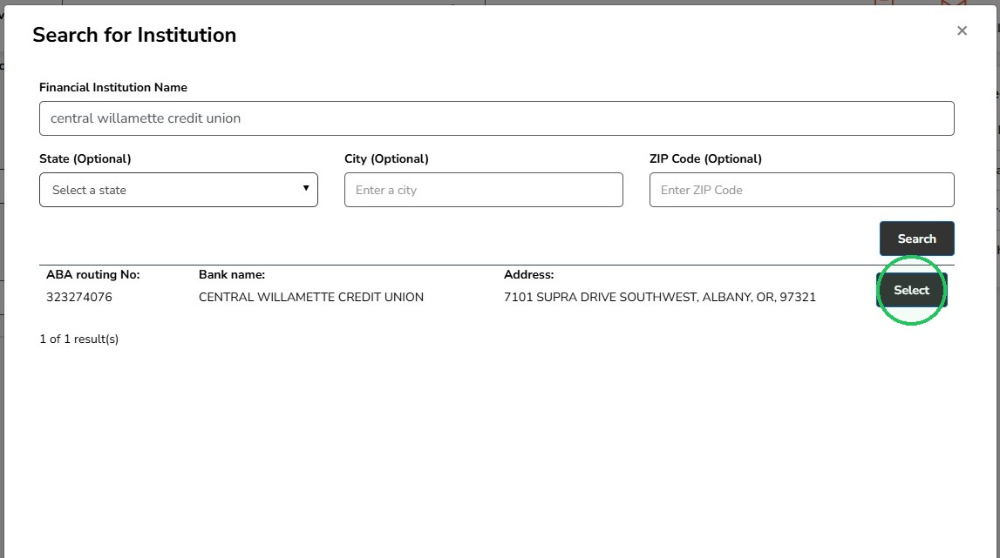
15
Check the box if the new recipient should be verified with pre notes
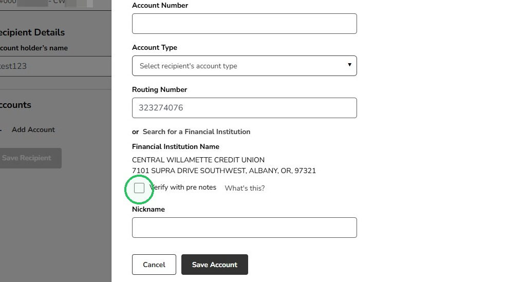
Verifying with pre-notes sends a $0 test entry to verify the recipient’s routing and account number before sending a payment. No funds are transferred. Choosing this option will delay the first payment by 1-2 business days while the verification is completed.
16
Enter a nickname for the new recipient then click "Save Account"
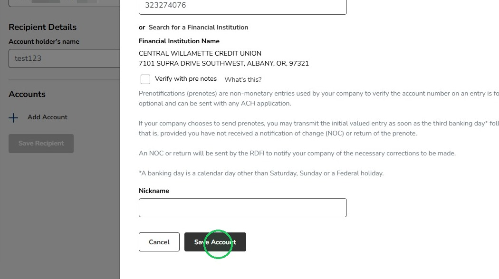
17
Click "Save Recipient"
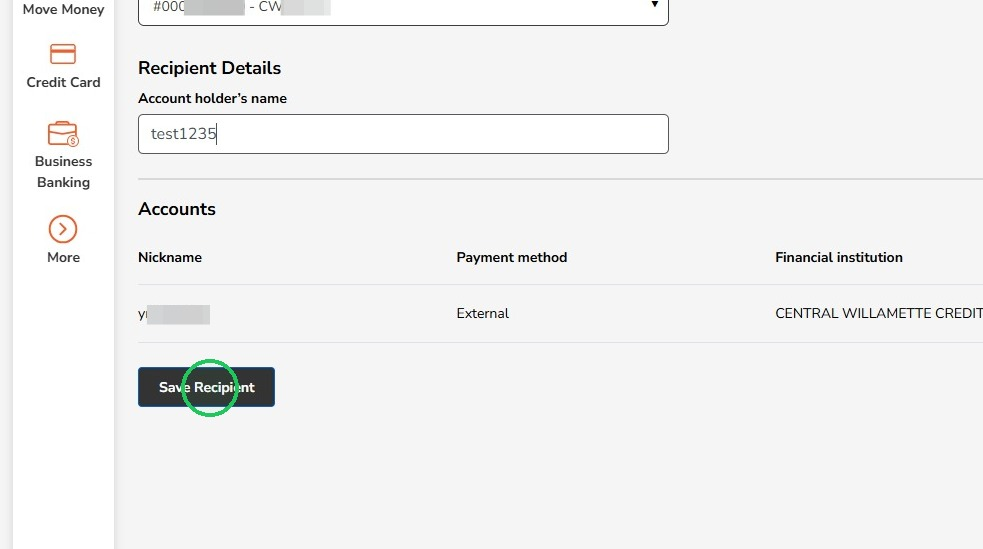
18
A green message will appear at the top indicating the new recipient was added successfully
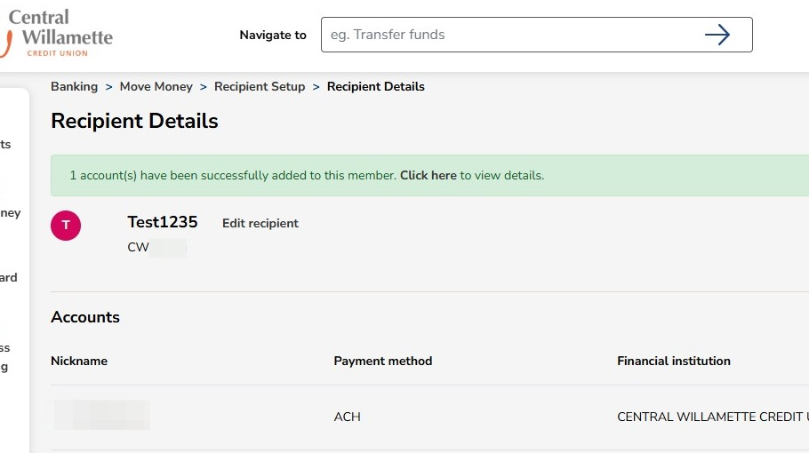